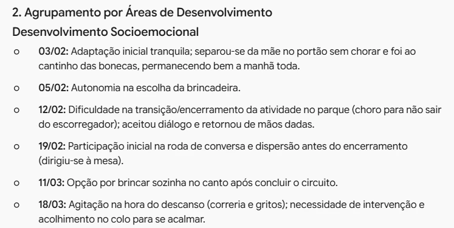
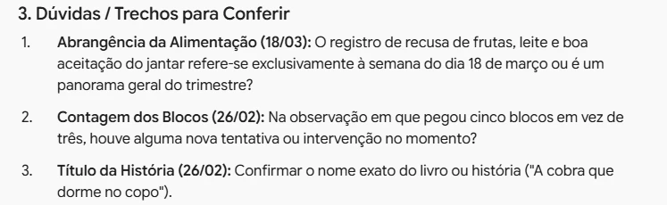
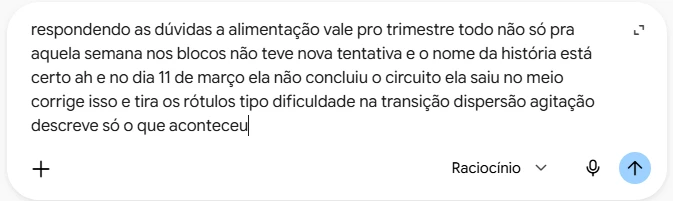
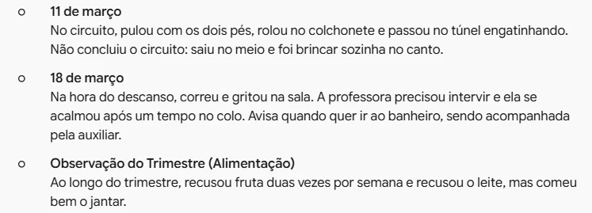

Do caderno ao registro de observação
Leia em voz alta as anotações soltas sobre a turma e deixe o Gemini passar a limpo
No tópico 2, o relatório da Alice nasceu de registros já organizados, um por data. Na rotina, não é assim que eles nascem: aparecem no caderno, entre uma atividade e outra, em pedaços, abreviações e setas. Passar a limpo fica para depois, e o depois nem sempre chega. Aqui, a proposta é ler o caderno em voz alta, falar do jeito que vier e deixar o Gemini organizar.
O ponto de partida: o caderno
Estas são as anotações de um trimestre sobre a Alice, a criança do exemplo do tópico 2. Só quem escreveu entende tudo o que está aí. A IA também não vai entender, se você só fotografar a página. Mas, se você ler em voz alta e explicar cada nota como explicaria para uma colega, ela entende.
- 3/2 1º dia. Tranq., não chorou. Mãe no portão → cantinho bonecas
- 5/2 escolheu sozinha. "quero o carrinho vermelho"
- 12/2 parque: chorou p/ voltar (escorregador). conversa → mão dada
- 19/2 roda: cachorro. levantou antes do fim
- 26/2 cobra q dorme no copo: recontou início, personagens ok. "1, 2, 3 e já". 3 blocos → pegou 5
- 4/3 alinhavo ~15 min, terminou sozinha
- 11/3 circuito: 2 pés, rola, túnel. saiu no meio
- 18/3 descanso: correria/gritos. colo → acalmou
- alim. recusa fruta 2x, leite. jantar ok
- banh. avisa (aux. acompanha)
Primeiro a instrução, depois a fala
Antes de ditar, diga ao Gemini o que ele deve fazer com o que vem depois. Sem isso, ele pode responder com um resumo, com conselhos pedagógicos ou já com um relatório pronto, quando o que você quer é só o registro passado a limpo. Digite esta instrução na caixa de texto (ou dite também):
Vou ditar as anotações que fiz no meu caderno sobre uma criança da turma do Infantil I A, ao longo do trimestre. Transforme o que eu falar em registros de observação claros e organizados: um registro por data, em ordem cronológica, com frases completas. Depois, agrupe as mesmas observações em quatro áreas: desenvolvimento socioemocional, aprendizagem, motricidade e cuidados. Regras: use somente o que eu disser, sem acrescentar interpretações, conclusões ou sugestões; tire as repetições e hesitações típicas da fala; se algum trecho estiver confuso ou incompleto, não adivinhe, liste no final como dúvida para eu conferir.
Cada parte da instrução tem uma função:
- As quatro áreas são as mesmas seções do relatório do tópico 2. Assim, o registro já sai organizado do jeito que o relatório vai precisar.
- "Use somente o que eu disser" separa o registro da avaliação. Registro descreve o que aconteceu. Interpretar é tarefa sua, depois.
- "Liste como dúvida" dá à IA uma saída que não seja inventar. Lembre do tópico 1: ela gera a continuação mais provável. Diante de uma lacuna, a tendência é preencher, a não ser que você peça outra coisa.
Ditar: leia o caderno e fale
-
1

Depois de digitar a instrução, pule uma linha (Shift + Enter) e clique no microfone da caixa de texto, ou use o atalho Ctrl + Shift + D. Na primeira vez, o Chrome pergunta se o Gemini pode usar o microfone. Clique em Permitir. A permissão vale só para esse site e pode ser retirada no ícone à esquerda do endereço.
-
2

Leia o caderno em voz alta, completando o que cada nota quer dizer. Não precisa se preocupar com pontuação, ordem perfeita ou um "ah, e..." no final. O texto chega à caixa todo emendado, como na imagem. Comece cada nota pela data ("dia 12"): é por ela que o Gemini vai se guiar. Antes de enviar, só confira se o ditado não trocou um nome ou um número.
O que volta
Em menos de um minuto, os fragmentos viram frases completas, em ordem. "Pro" vira "para", o "então vamos lá" desaparece, e a fala do caderno, entre aspas, continua entre aspas.

Na segunda parte, as mesmas observações aparecem nas quatro áreas do relatório.

Na terceira parte, as dúvidas: o Gemini percebeu que "recusou fruta duas vezes essa semana" não dizia se aquilo valia só para aquela semana ou para o trimestre inteiro. É justamente a pergunta que faltava fazer.

Revise antes de usar
Mesmo com a regra "use somente o que eu disser", a primeira resposta trouxe três tipos de problema. Os trechos destacados mostram onde:
12/02: Dificuldade na transição/encerramento da atividade no parque.
19/02: Participação inicial na roda de conversa e dispersão antes do encerramento.
05/02: Escolheu sozinhos onde queria brincar.
- Fato trocado. No ditado, a Alice "saiu do circuito" no meio. No agrupamento, ela foi brincar "após concluir o circuito". O sentido ficou invertido.
- Rótulos. "Dificuldade na transição", "dispersão" e "agitação" são interpretações que o professor não fez. Num documento que a família vai ler, cada palavra faz diferença.
- Erro de português. "Escolheu sozinhos". A IA também erra concordância.
A correção é na mesma conversa, e pode ser falada também. Responda às dúvidas e diga o que precisa mudar:


A nova versão resolveu o que foi pedido, mas trouxe outra mudança: "recusou fruta duas vezes essa semana" virou "duas vezes por semana" ao longo do trimestre. Não é a mesma coisa. Corrigir uma parte pode mexer em outra, por isso a leitura final é feita com o caderno do lado, conferindo datas, números, quem fez o quê e o que foi ou não concluído.
Observação sobre aluno, só no Gemini institucional
É dado pessoal de criança, protegido pela LGPD. Faça no computador ou no Chromebook, com a conta da rede, mesmo que ditar no ChatGPT do celular pareça mais cômodo. O porquê está em Dados de aluno só em conta institucional.
Daqui para o relatório
Esses registros são a matéria-prima do vídeo do tópico 2. Abra uma nova conversa, cole o comando do relatório (ou o prompt gerado a partir do seu modelo) e, no fim, os registros revisados. A regra também vale para o ditado: uma criança, uma conversa. Assim, as anotações de uma criança não se misturam às de outra.
Dicas
- Guarde a instrução num documento e cole sempre a mesma. Ajuste as áreas ao modelo de relatório da sua etapa.
- Diga a data antes de cada nota. Sem ela, o Gemini pode juntar observações de dias diferentes.
- Não precisa esperar o fim do trimestre. Ditar as notas da semana na sexta-feira dá menos trabalho e você ainda lembra do contexto.
- Quando o ditado errar um nome, corrija antes de enviar. Depois, o erro se espalha por todos os registros.